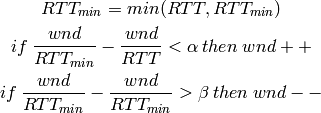
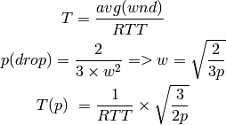

...
...
...
Fast Retransmit:
Detecting just a single packet loss takes a full RTO (500ms or more). Rather than waiting for this detection to happen the receiver (Rx) can signal there was a hole in the stream.
This signal is delivered in the form of typically 3, duplicate ACKs sent back to the sender.
When this occurs the transmitter (Tx) retransmits the relevant segment, using fast retransmit, and then returns to using slow-start.
Reno (4.4 BSD, 1990) adds fast recovery which allows you to get back up to the window size you think you should be at quickly.
NewReno (4.4 BSD, 1993) modifies fast recovery. Reno had poor performance for multiple losses as fast-retransmit may only be used for the first lost segment.
Selective Acknowledgement (SACK) maintains more state in order to retransmit only the lost packets.
An alternative approach to congestion avoidance, the source uses RTT to estimate the number of packets which are in the pipe, and the end-to-end queuing delay is used as the congestion measure.
For every RTT:

...
TCP is not always useful because of the fact that it will transmit all the data eventually. Messages/frames are a byte-stream and the reliability can cause untimely delivery, an example being video frames arriving later on and being played out of sequence.
Audio/video codecs usually produce frames and not a continuous bytestream thus loosing a frame is better than delay all the subsequent data, we can skip or interpolate missing frames without too much worry.
Real Time Protocol encapsulates media over UDP, it provides sequencing, timestamping and delivery monitoring, but there is no reliability and no QoS.
RTP adds a control channel (Real Time Control Protocol) abbreviated as RTCP, which provides a backchannel to report statistics.
It only provides transport and leaves encoding etc to the application.
Real-time media is being sent at a given rate (the speed which you are sampling the video or audio), this can cause TCP to experience loss and back off since UDP has no concept of congestion.
There is a need to adapt real-time media in order to be nice to TCP. Congestion control can be provided using an equation based system:

...